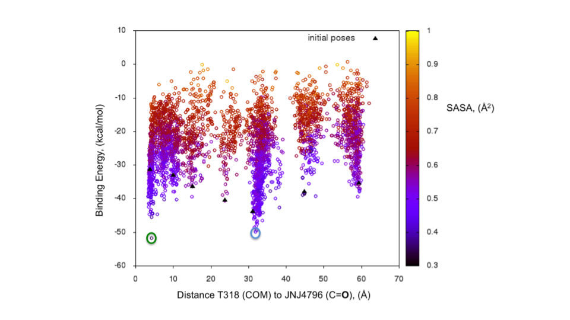
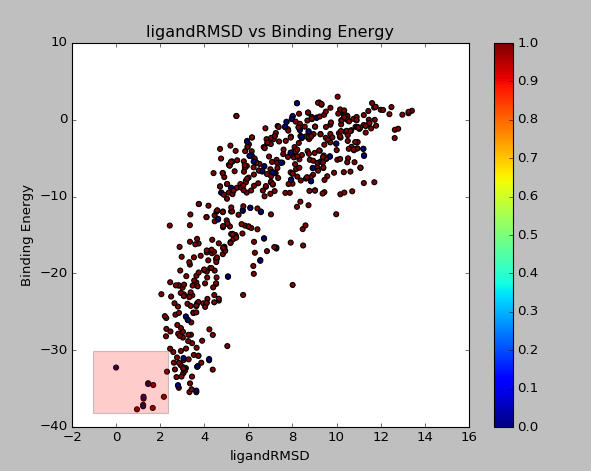

Basic Analysis¶
The basics on PELE analysis to run after the simulation is finished.
Plot metrics¶
AdaptivePELE (within the PelePlatform) and Gnuplot is need it. To run from inside the /LIG_Pele/output/ folder
Explanation:
python -m AdaptivePELE.analysis.plotAdaptive pele_steps column_x (starting by 1) column_y basename_of_report -points -zcol column_z (colorbar) | gnuplot -p
Example:
python -m AdaptivePELE.analysis.plotAdaptive 8 5 6 report_ -points -zcol 4 | gnuplot -p
If you want to limit the axis of the plot
- You can obtain the gnuplot command by doing the next command:
python -m AdaptivePELE.analysis.plotAdaptive 8 5 6 report_ -points -zcol 4- To obtain this output:
set cbrange[0:60]; plot for [i=1:127] for [j=0:60-1] ''.j.'/report_'.i u 5:8 lt 6 lc palette frac j/60. notitleThen enter to gnuplot set the xrange/yrange and use the line outputted by the previous command to plot:
$ gnuplot > set xrange [-9600:-9400] > set yrange [-90:0] > set cbrange[0:60]; plot for [i=1:127] for [j=0:60-1] ''.j.'/report_'.i u 5:8 lt 6 lc palette frac j/60. notitle
Output:
Retrieve the snapshots with best energy¶
AdaptivePELE (within PelePlatform) is need it. To run from inside the LIG_Pele/output/ folder.
Explanation:
python -m AdaptivePELE.analysis.interactivePlot columny columnx pele_steps -o output_folder
Example:
python -m AdaptivePELE.analysis.interactivePlot 5 6 8 -o BestStructs
Once the plot is done with your left button mouse drag a square on the plot containing the structures you want to be downloaded as shown in Figure below.
This will output all snapshots contain in the square in a folder called BestStructs.
Extract the movie of your best snapshot¶
AdaptivePELE is need it.
Once you did the interactivePlot you may want to have the entrance path of your best selected structure. For this you must run the commnad below from inside the LIG_Pele/output folder.
Explanation:
python -m AdaptivePELE.analysis.backtrackAdaptiveTrajectory epoch trajectory step
Example:
python -m AdaptivePELE.analysis.backtrackAdaptiveTrajectory 5 123 1